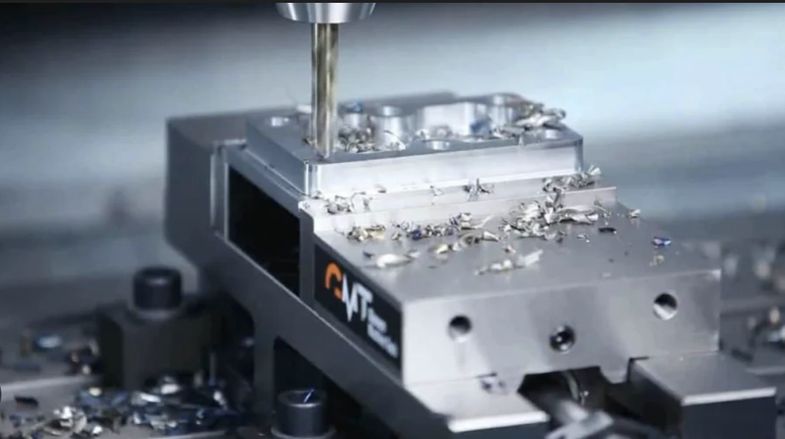

Product-level detection of vibration-induced surface defects using sensor signal analysis

Surface defects in precision manufacturing are costly, hard to catch, and typically discovered too late — through manual inspection after the damage is done. I built a data-driven pipeline to detect vibration-induced defects in CNC machining using raw sensor signals, with the goal of flagging defective products before they ever reach inspection.
Working with data from a CNC drilling/tapping machine, I analyzed three sensor streams — vibration acceleration, axis position (X, Y, Z), and motor load current — across 30 normal runs, 2 defective runs, and 1 idle baseline run. I handled signal preprocessing, feature engineering in both time and frequency domains, and built a comparative analysis framework to isolate defect-specific patterns from normal operational noise.
Despite having only 2 defective samples, I identified distinctive frequency-domain vibration signatures and load current anomalies that consistently separated defective runs from normal ones. Using the idle run as a mechanical baseline, I was also able to distinguish cutting-related vibrations from background machine noise — a key step toward reliable detection.
This work proves that sensor-based defect detection is feasible even under severe class imbalance — a common reality in industrial settings. The product-level feature profiles I developed lay the groundwork for real-time quality monitoring, early defect flagging, and predictive maintenance. Next, I plan to expand the defect sample pool and explore anomaly detection models to formalize the classification pipeline.